<title>Gallery Rooms</title>
<meta name="claude:viewport-fit-sides" content="cover">
<link rel="preconnect" href="https://fonts.googleapis.com">
<link rel="stylesheet" href="https://fonts.googleapis.com/css2?family=Jost:wght@300;400;500&display=swap">
<style>
/* Layout: one quiet column; a featured room, then the rooms grouped by the space they hang in. Single dark look, like the rooms themselves. */
:root{--bg:#191714;--panel:#221f1b;--ink:#efe8dd;--muted:#a99d8d;--line:rgba(239,232,221,.12);--focus:#e2c9a3;
  --sans:"Jost","Helvetica Neue",Arial,sans-serif;color-scheme:dark}
body{background:var(--bg);color:var(--ink);font-family:var(--sans);font-weight:300;-webkit-font-smoothing:antialiased}
.wrap{max-width:1120px;margin:0 auto;padding-block:48px 80px;padding-left:max(16px,env(safe-area-inset-left,0px));padding-right:max(16px,env(safe-area-inset-right,0px))}
.by{margin:0;font-size:12px;letter-spacing:.24em;text-transform:uppercase;color:var(--muted)}
h1{margin:10px 0 0;font-weight:400;font-size:clamp(30px,5vw,44px);letter-spacing:.04em;text-wrap:balance}
.lede{margin:14px 0 0;max-width:58ch;font-size:16px;line-height:1.6;color:var(--muted)}
a{color:inherit;text-decoration:none}
a:focus-visible{outline:2px solid var(--focus);outline-offset:4px;border-radius:4px}
.feat{margin-top:40px;display:grid;grid-template-columns:minmax(0,1.1fr) minmax(0,1fr);gap:28px;align-items:center;background:var(--panel);border:1px solid var(--line);border-radius:6px;padding:20px}
.feat img{width:100%;aspect-ratio:4/3;object-fit:cover;display:block;border-radius:2px;filter:grayscale(1)}
.feat h2{margin:6px 0 0;font-weight:400;font-size:28px;letter-spacing:.03em}
.feat p{margin:10px 0 0;line-height:1.6;color:var(--muted);max-width:44ch}
.go{display:inline-block;margin-top:18px;font-size:12px;letter-spacing:.14em;text-transform:uppercase;border:1px solid rgba(239,232,221,.3);border-radius:999px;padding:9px 16px}
.feat:hover .go,.card:hover .nm{color:#fff}
section{margin-top:56px}
.gh{display:flex;flex-wrap:wrap;align-items:baseline;gap:6px 16px;border-bottom:1px solid var(--line);padding-bottom:12px}
.gh h2{margin:0;font-weight:400;font-size:20px;letter-spacing:.03em}
.gh p{margin:0;font-size:14px;color:var(--muted)}
.grid{list-style:none;margin:20px 0 0;padding:0;display:grid;grid-template-columns:repeat(auto-fill,minmax(200px,1fr));gap:28px 20px}
.card{display:grid;gap:6px}
.ph{display:block;aspect-ratio:4/3;background:#2a2622;border-radius:2px;overflow:hidden}
.ph img{width:100%;height:100%;object-fit:cover;display:block;transition:transform .8s ease}
.card:hover img{transform:scale(1.03)}
.nm{margin-top:6px;font-size:16px;font-weight:400;letter-spacing:.02em}
.ct{font-size:13px;color:var(--muted)}
footer{margin-top:64px;font-size:13px;color:var(--muted);line-height:1.6}
@media (max-width:640px){.feat{grid-template-columns:1fr;padding:14px}.grid{grid-template-columns:repeat(2,minmax(0,1fr));gap:22px 12px}}
@media (prefers-reduced-motion:reduce){.ph img{transition:none}}
</style>
<main class="wrap">
<p class="by">Volodymyr Demkiv</p>
<h1>Gallery Rooms</h1>
<p class="lede">Each series hangs in a room made for it. Drag to look around, tap a print to step closer, scroll or pinch to move. Every print is framed in thin black with a white mat.</p>
<a class="feat" href="half-fruit.html"><div><p class="by">photoMIAMI 2026</p><h2>Half Fruit</h2><p>Nine prints in a warm travertine room with a window onto palms and the sea.</p><span class="go">Walk through the room</span></div></a>
<section><header class="gh"><h2>A long corridor</h2><p>Large prints, 60 in on the long side, on alternating walls</p></header><ul class="grid"><li><a class="card" href="everglades.html"><span class="ph">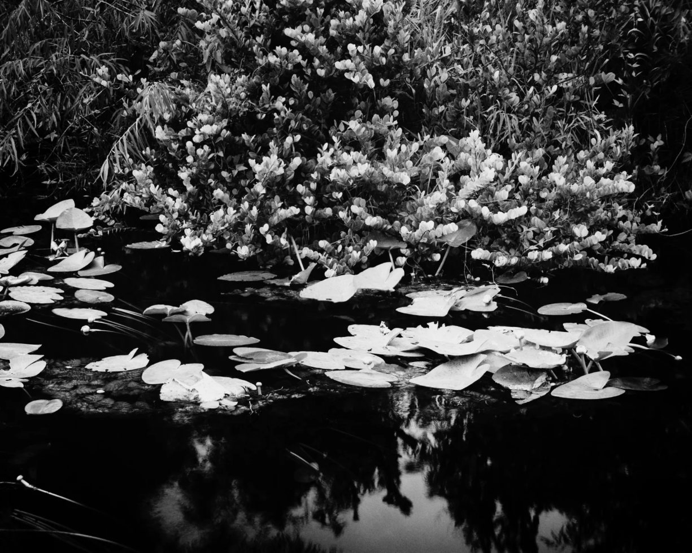</span><span class="nm">Everglades</span><span class="ct">9 prints</span></a></li><li><a class="card" href="north-west.html"><span class="ph">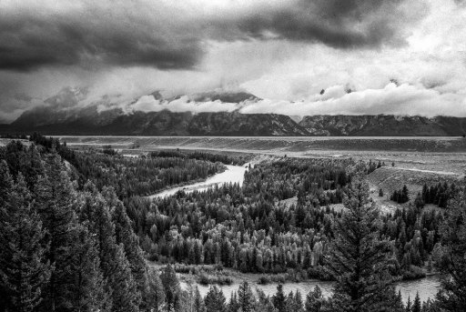</span><span class="nm">North-West</span><span class="ct">6 prints</span></a></li><li><a class="card" href="south-west.html"><span class="ph">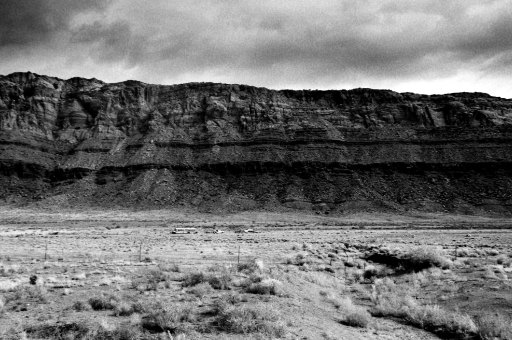</span><span class="nm">South-West</span><span class="ct">6 prints</span></a></li><li><a class="card" href="carpathian.html"><span class="ph"></span><span class="nm">Carpathian</span><span class="ct">6 prints</span></a></li><li><a class="card" href="dark-dolomites.html"><span class="ph">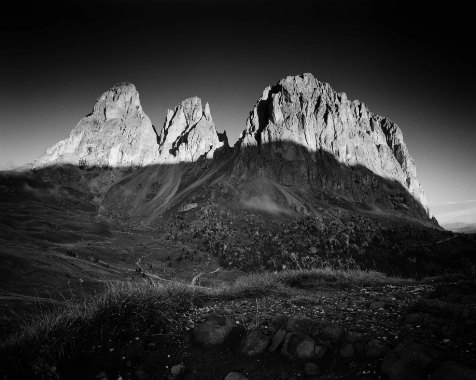</span><span class="nm">Dark Dolomites</span><span class="ct">6 prints</span></a></li><li><a class="card" href="pacific.html"><span class="ph">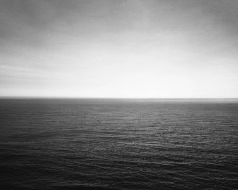</span><span class="nm">Pacific</span><span class="ct">6 prints</span></a></li><li><a class="card" href="burned-california.html"><span class="ph">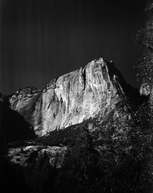</span><span class="nm">Burned California</span><span class="ct">6 prints</span></a></li><li><a class="card" href="fields.html"><span class="ph">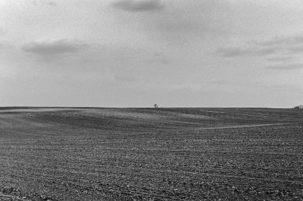</span><span class="nm">Fields</span><span class="ct">6 prints</span></a></li></ul></section>
<section><header class="gh"><h2>A New York white cube</h2><p>White walls, concrete floor, track light</p></header><ul class="grid"><li><a class="card" href="the-new-york.html"><span class="ph">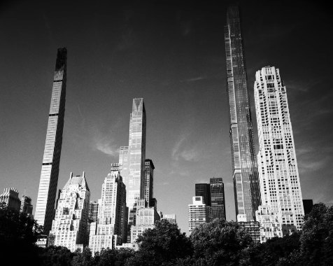</span><span class="nm">The New York</span><span class="ct">6 prints</span></a></li><li><a class="card" href="chicago.html"><span class="ph">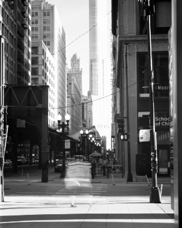</span><span class="nm">Chicago</span><span class="ct">6 prints</span></a></li><li><a class="card" href="escaping-the-strip.html"><span class="ph">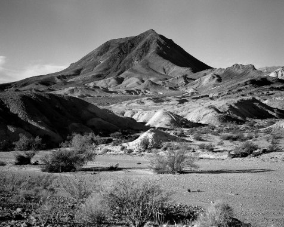</span><span class="nm">Escaping the Strip</span><span class="ct">6 prints</span></a></li><li><a class="card" href="lost.html"><span class="ph">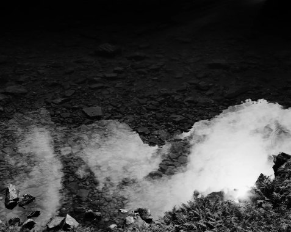</span><span class="nm">Lost</span><span class="ct">6 prints</span></a></li><li><a class="card" href="undefined.html"><span class="ph">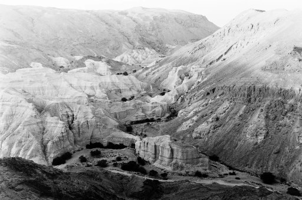</span><span class="nm">Undefined</span><span class="ct">6 prints</span></a></li><li><a class="card" href="dream.html"><span class="ph">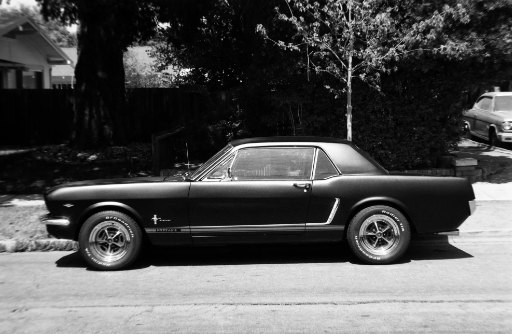</span><span class="nm">Dream</span><span class="ct">6 prints</span></a></li></ul></section>
<section><header class="gh"><h2>A Paris salon</h2><p>Panelled walls, oak floor, tall windows onto zinc roofs</p></header><ul class="grid"><li><a class="card" href="clouds.html"><span class="ph"></span><span class="nm">Clouds</span><span class="ct">One work, 25 prints in one frame</span></a></li><li><a class="card" href="interpretation.html"><span class="ph">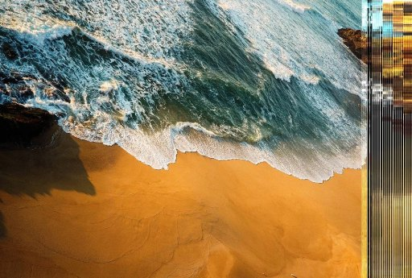</span><span class="nm">Digital Interpretation</span><span class="ct">6 prints</span></a></li><li><a class="card" href="layers-of-history.html"><span class="ph">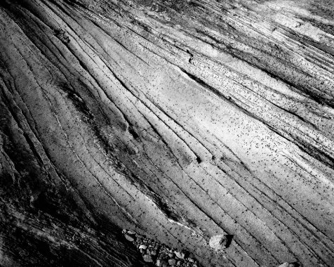</span><span class="nm">Layers of History</span><span class="ct">6 prints</span></a></li><li><a class="card" href="bizkaia.html"><span class="ph">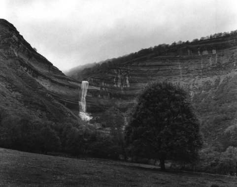</span><span class="nm">Bizkaia</span><span class="ct">6 prints</span></a></li><li><a class="card" href="following-footsteps.html"><span class="ph">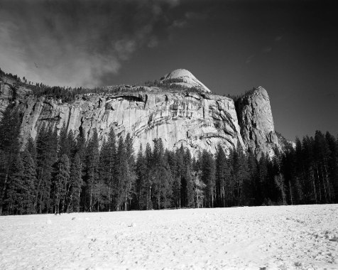</span><span class="nm">Following Footsteps of Ancestors</span><span class="ct">6 prints</span></a></li></ul></section>
<section><header class="gh"><h2>A London brick gallery</h2><p>Limewashed brick, timber beams, steel windows</p></header><ul class="grid"><li><a class="card" href="berlin.html"><span class="ph">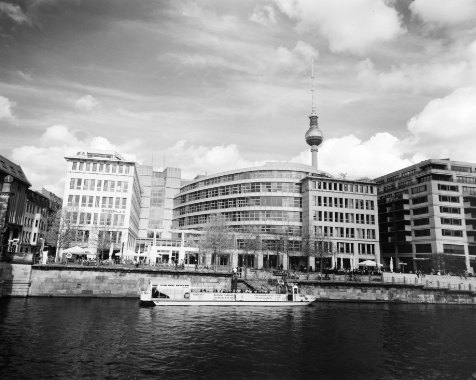</span><span class="nm">Berlin</span><span class="ct">6 prints</span></a></li><li><a class="card" href="860519.html"><span class="ph">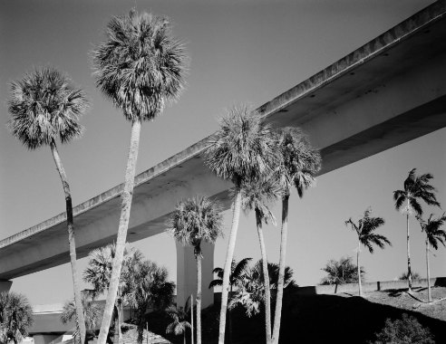</span><span class="nm">860519</span><span class="ct">6 prints</span></a></li><li><a class="card" href="flames-of-war.html"><span class="ph">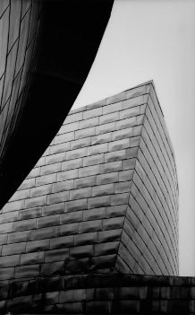</span><span class="nm">Flames of WAR</span><span class="ct">6 prints</span></a></li><li><a class="card" href="ghosts-of-the-past.html"><span class="ph">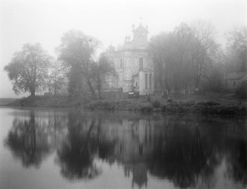</span><span class="nm">Ghosts of the Past</span><span class="ct">6 prints</span></a></li></ul></section>
<footer>Prints are made by hand by the artist in editions of 5 + 1 AP. Available · inquire.</footer>
</main>
